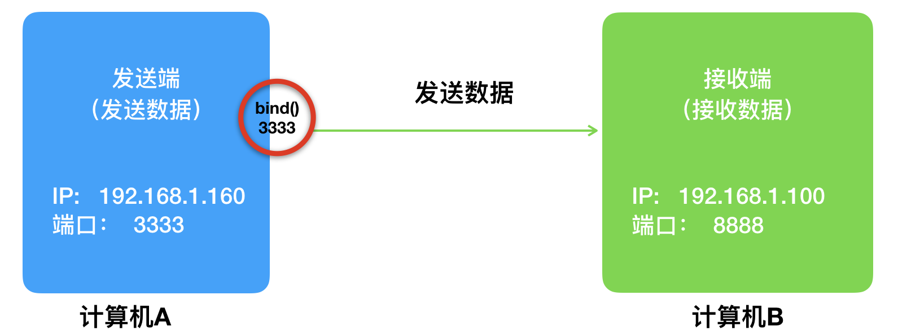
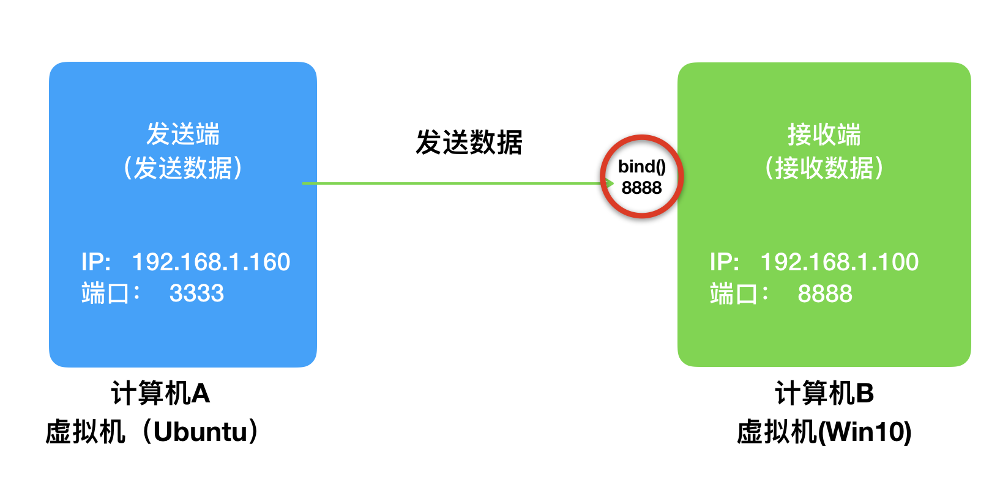
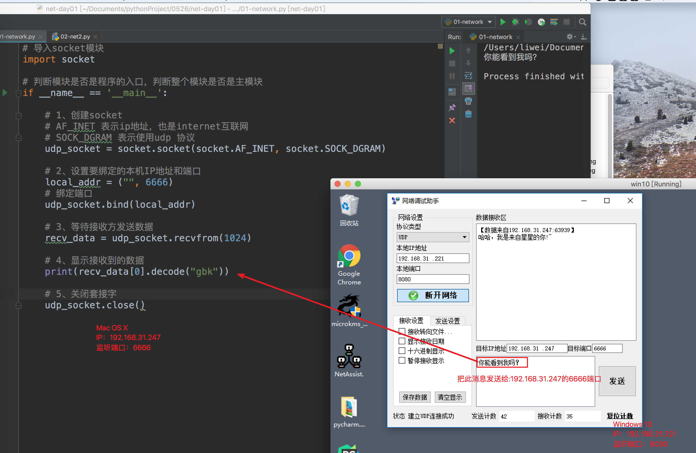
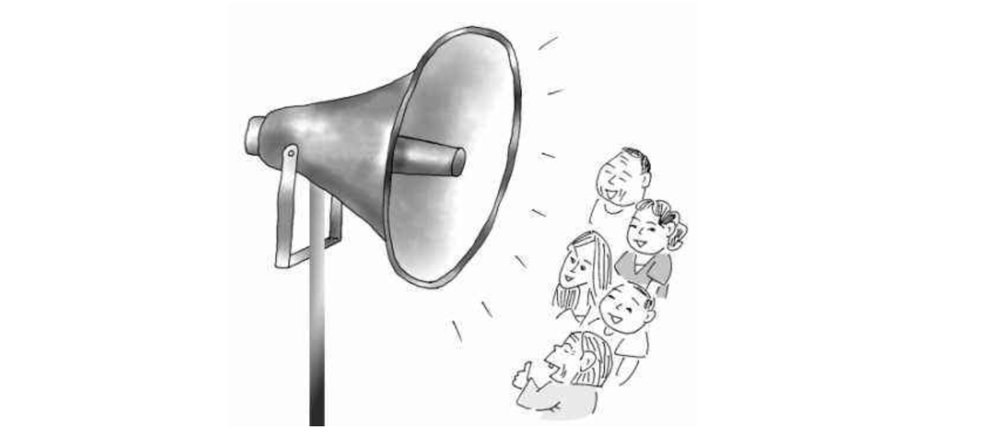
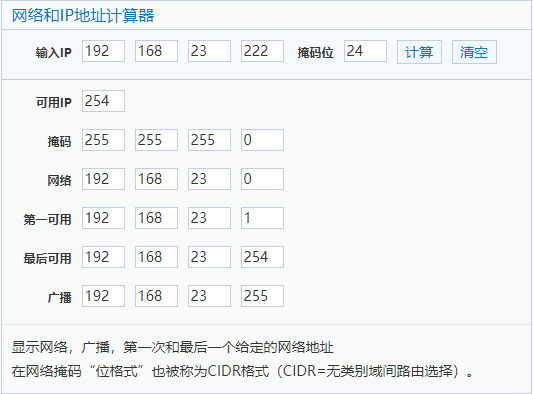

<!DOCTYPE lake>
<h2 data-lake-id="fnuyp" data-lake-index-type="2" id="fnuyp"><span data-lake-id="u644e2d1b" id="u644e2d1b" style="color: rgba(0, 0, 0, 0.87)">UDP发送端</span></h2><p data-lake-id="uf2504167" id="uf2504167"></p><h3 data-lake-id="L0qJm" data-lake-index-type="2" id="L0qJm"><span data-lake-id="uc9113036" id="uc9113036" style="color: rgba(0, 0, 0, 0.87)">实现步骤</span></h3><ol list="ua52219f6"><li data-lake-id="ud194c8c7" fid="ufffc854a" id="ud194c8c7"><span data-lake-id="u81c701df" id="u81c701df" style="color: rgba(0, 0, 0, 0.87)">导入模块socket</span></li><li data-lake-id="u39fed3d3" fid="ufffc854a" id="u39fed3d3"><span data-lake-id="uc6f5060a" id="uc6f5060a" style="color: rgba(0, 0, 0, 0.87)">创建socket套接字</span></li><li data-lake-id="u15b344fa" fid="ufffc854a" id="u15b344fa"><span data-lake-id="u96f8591b" id="u96f8591b" style="color: rgba(0, 0, 0, 0.87)">绑定IP&amp;端口（可选）</span></li><li data-lake-id="ufbed628b" fid="ufffc854a" id="ufbed628b"><span data-lake-id="ubc7d01ef" id="ubc7d01ef" style="color: rgba(0, 0, 0, 0.87)">发送数据</span></li><li data-lake-id="ub197b229" fid="ufffc854a" id="ub197b229"><span data-lake-id="u5f28ee33" id="u5f28ee33" style="color: rgba(0, 0, 0, 0.87)">关闭套接字</span></li></ol><h3 data-lake-id="tI25u" data-lake-index-type="2" id="tI25u"><span data-lake-id="ua9fb5689" id="ua9fb5689" style="color: rgba(0, 0, 0, 0.87)">核心方法</span></h3><p data-lake-id="ud5285fc8" id="ud5285fc8"><strong><span data-lake-id="u10922d8b" id="u10922d8b" style="color: rgba(0, 0, 0, 0.87)">UDP 发送数据的几个关键方法：</span></strong></p><ul list="u5c8b47ca"><li data-lake-id="u0cc91bb9" fid="u32cfc8d5" id="u0cc91bb9"><code data-lake-id="u32e17518" id="u32e17518"><span data-lake-id="ua92864e8" id="ua92864e8" style="color: var(--md-code-fg-color)">socket.socket</span><span data-lake-id="uf3fe0aaf" id="uf3fe0aaf" style="color: rgba(0, 0, 0, 0.87)"> </span></code><span data-lake-id="uf4b7be9b" id="uf4b7be9b" style="color: rgba(0, 0, 0, 0.87)">—— 创建套接字</span></li></ul><span class="yuque-card-unsupported">[codeblock]</span><ul list="u27d8fe9a"><li data-lake-id="u6a0de6be" fid="ud8b0550d" id="u6a0de6be"><code data-lake-id="udcc3cb39" id="udcc3cb39"><span data-lake-id="u17170e5a" id="u17170e5a" style="color: rgba(0, 0, 0, 0.87)">socket.bind((IP地址, 端口号))</span></code><span data-lake-id="uda5d3119" id="uda5d3119" style="color: rgba(0, 0, 0, 0.87)"> —— 绑定到一个地址（可选）</span></li></ul><p data-lake-id="udb59a159" id="udb59a159"><span data-lake-id="uefeded1e" id="uefeded1e" style="color: rgba(0, 0, 0, 0.87)">这个地址必须是没有被占用的，否则会连接失败。不进行</span><code data-lake-id="u067d0a9e" id="u067d0a9e"><span data-lake-id="u640bc23d" id="u640bc23d" style="color: rgba(0, 0, 0, 0.87)">bind</span></code><span data-lake-id="u0ebd58aa" id="u0ebd58aa" style="color: rgba(0, 0, 0, 0.87)">，系统会随机分配一个端口</span></p><span class="yuque-card-unsupported">[codeblock]</span><ul list="u27d8fe9a" start="2"><li data-lake-id="u801a98f0" fid="ud8b0550d" id="u801a98f0"><code data-lake-id="u5e138b54" id="u5e138b54"><span data-lake-id="ue539c4e5" id="ue539c4e5" style="color: var(--md-code-fg-color)">socket.sendto</span></code><span data-lake-id="u06a614fb" id="u06a614fb" style="color: rgba(0, 0, 0, 0.87)"> —— 发送数据</span></li></ul><span class="yuque-card-unsupported">[codeblock]</span><ul list="ue697fe1a"><li data-lake-id="ufed75741" fid="u8614f0df" id="ufed75741"><code data-lake-id="u89a94170" id="u89a94170"><span data-lake-id="ud4fff653" id="ud4fff653" style="color: var(--md-code-fg-color)">socket.close</span></code><span data-lake-id="u29af8a34" id="u29af8a34" style="color: rgba(0, 0, 0, 0.87)"> —— 关闭套接字</span></li></ul><span class="yuque-card-unsupported">[codeblock]</span><p data-lake-id="u57520bb0" id="u57520bb0"><br/></p><h3 data-lake-id="t4hOw" data-lake-index-type="2" id="t4hOw"><span data-lake-id="u871ca67d" id="u871ca67d" style="color: rgba(0, 0, 0, 0.87)">参考代码</span></h3><span class="yuque-card-unsupported">[codeblock]</span><p data-lake-id="u857627bd" id="u857627bd"><br/></p><h2 data-lake-id="rbzQ8" data-lake-index-type="2" id="rbzQ8"><span data-lake-id="u6ba3aa14" id="u6ba3aa14" style="color: rgba(0, 0, 0, 0.87)">UDP接收端</span></h2><p data-lake-id="u730463bb" id="u730463bb"></p><p data-lake-id="u42d36592" id="u42d36592"><span data-lake-id="ufbe22f2d" id="ufbe22f2d" style="color: rgba(0, 0, 0, 0.87)">​</span><br/></p><h3 data-lake-id="ttQyA" data-lake-index-type="2" id="ttQyA"><span data-lake-id="u75158b39" id="u75158b39" style="color: rgba(0, 0, 0, 0.87)">实现步骤</span></h3><ol list="u84e3c2b4"><li data-lake-id="uc9a98889" fid="u80e28c64" id="uc9a98889"><span data-lake-id="u9162b312" id="u9162b312" style="color: rgba(0, 0, 0, 0.87)">导入模块socket</span></li><li data-lake-id="u90c3cfef" fid="u80e28c64" id="u90c3cfef"><span data-lake-id="uf428f3a5" id="uf428f3a5" style="color: rgba(0, 0, 0, 0.87)">创建socket套接字</span></li><li data-lake-id="u7aed2453" fid="u80e28c64" id="u7aed2453"><span data-lake-id="ucecdd05b" id="ucecdd05b" style="color: rgba(0, 0, 0, 0.87)">绑定端口号（必选）</span></li><li data-lake-id="u0e351fc5" fid="u80e28c64" id="u0e351fc5"><span data-lake-id="uc272b94d" id="uc272b94d" style="color: rgba(0, 0, 0, 0.87)">接收数据</span></li><li data-lake-id="u5d699656" fid="u80e28c64" id="u5d699656"><span data-lake-id="u1c5e5e33" id="u1c5e5e33" style="color: rgba(0, 0, 0, 0.87)">关闭套接字</span></li></ol><h3 data-lake-id="ag7Fd" data-lake-index-type="2" id="ag7Fd"><span data-lake-id="u9fe8c077" id="u9fe8c077" style="color: rgba(0, 0, 0, 0.87)">核心方法</span></h3><p data-lake-id="u9218a3fd" id="u9218a3fd"><span data-lake-id="u809f3e62" id="u809f3e62">使用</span><code data-lake-id="ubc963792" id="ubc963792"><span data-lake-id="u4e67eae1" id="u4e67eae1">bind()</span></code><span data-lake-id="ua1015d4d" id="ua1015d4d"> 在接收数据前绑定自己主机的IP地址和端口</span></p><p data-lake-id="u76259197" id="u76259197"><span data-lake-id="ue95c5b5e" id="ue95c5b5e">​</span><br/></p><ul list="u4e96f19c"><li data-lake-id="u0e624064" fid="u9c86bc25" id="u0e624064"><code data-lake-id="ued0d0f8c" id="ued0d0f8c"><span data-lake-id="u3d0542a3" id="u3d0542a3" style="color: var(--md-code-fg-color)">socket.recvfrom(缓冲区大小)</span></code><span data-lake-id="uf92b42e8" id="uf92b42e8" style="color: rgba(0, 0, 0, 0.87)">—— 接受UDP套接字的数据。</span></li></ul><span class="yuque-card-unsupported">[codeblock]</span><ul list="ua5bf5ad9"><li data-lake-id="ub1ab5904" fid="u7a618e3f" id="ub1ab5904"><code data-lake-id="u505e409b" id="u505e409b"><span data-lake-id="u54eb0de4" id="u54eb0de4" style="color: var(--md-code-fg-color)">decode()</span></code><span data-lake-id="u1294166d" id="u1294166d" style="color: rgba(0, 0, 0, 0.87)">—— 解码，把二进制数据解码为 字符串 类型</span></li></ul><span class="yuque-card-unsupported">[codeblock]</span><h3 data-lake-id="duxrW" data-lake-index-type="2" id="duxrW"><span data-lake-id="u3e8a6d7f" id="u3e8a6d7f" style="color: rgba(0, 0, 0, 0.87)">参考代码</span></h3><span class="yuque-card-unsupported">[codeblock]</span><p data-lake-id="u6ade80b5" id="u6ade80b5"><br/></p><p data-lake-id="u89133ba9" id="u89133ba9"><strong><span data-lake-id="u2813cbe4" id="u2813cbe4" style="color: rgba(0, 0, 0, 0.87)">运行结果：</span></strong></p><p data-lake-id="u9ef5645d" id="u9ef5645d"></p><h2 data-lake-id="ZngSG" data-lake-index-type="2" id="ZngSG"><span data-lake-id="udeb8e938" id="udeb8e938">UDP发广播</span></h2><h3 data-lake-id="YYKEL" data-lake-index-type="2" id="YYKEL"><span data-lake-id="u797551fe" id="u797551fe" style="color: rgba(0, 0, 0, 0.87)">什么是广播?</span></h3><p data-lake-id="u36641576" id="u36641576"></p><p data-lake-id="u024b7aa3" id="u024b7aa3"><br/></p><h3 data-lake-id="Ga2kq" data-lake-index-type="2" id="Ga2kq"><span data-lake-id="u2b548594" id="u2b548594" style="color: rgba(0, 0, 0, 0.87)">实现步骤</span></h3><ol list="ue773933a"><li data-lake-id="u20a6d47a" fid="u3465f254" id="u20a6d47a"><span data-lake-id="u59addba8" id="u59addba8" style="color: rgba(0, 0, 0, 0.87)">导入模块socket</span></li><li data-lake-id="uad4125dd" fid="u3465f254" id="uad4125dd"><span data-lake-id="u76d0dbf6" id="u76d0dbf6" style="color: rgba(0, 0, 0, 0.87)">创建socket套接字</span></li><li data-lake-id="ub10a6ce9" fid="u3465f254" id="ub10a6ce9"><span data-lake-id="u9c8f0b9f" id="u9c8f0b9f" style="color: rgba(0, 0, 0, 0.87)">设置允许发送广播</span></li><li data-lake-id="uc1570859" fid="u3465f254" id="uc1570859"><span data-lake-id="uf6125034" id="uf6125034" style="color: rgba(0, 0, 0, 0.87)">发送广播数据(注意广播地址)</span></li><li data-lake-id="udd699215" fid="u3465f254" id="udd699215"><span data-lake-id="u427fb7da" id="u427fb7da" style="color: rgba(0, 0, 0, 0.87)">关闭套接字</span></li></ol><h3 data-lake-id="bfjsU" data-lake-index-type="2" id="bfjsU"><span data-lake-id="u3b99b5ba" id="u3b99b5ba" style="color: rgba(0, 0, 0, 0.87)">核心方法</span></h3><ul list="u8c017dd9"><li data-lake-id="ub57e6ce5" fid="ud84d121c" id="ub57e6ce5"><code data-lake-id="u3511035d" id="u3511035d"><span data-lake-id="u3adc7b18" id="u3adc7b18" style="color: var(--md-code-fg-color)">socket.setsockopt</span></code><span data-lake-id="uf8eab431" id="uf8eab431" style="color: rgba(0, 0, 0, 0.87)"> —— 设置允许发送广播</span></li></ul><span class="yuque-card-unsupported">[codeblock]</span><h3 data-lake-id="jpKri" data-lake-index-type="2" id="jpKri"><span data-lake-id="uee2e245e" id="uee2e245e" style="color: rgba(0, 0, 0, 0.87)">参考代码</span></h3><span class="yuque-card-unsupported">[codeblock]</span><h3 data-lake-id="BCKWC" data-lake-index-type="2" id="BCKWC"><span data-lake-id="uff2015a2" id="uff2015a2">广播地址计算</span></h3><p data-lake-id="uae31789a" id="uae31789a"><span data-lake-id="ueacaa02f" id="ueacaa02f">广播地址要根据当前局域网IP和子网掩码得到，在线生成网站：</span><a data-lake-id="u59503ace" href="https://www.sojson.com/convert/subnetmask.html" id="u59503ace" rel="noopener noreferrer" target="_blank"><span data-lake-id="u14fd9d77" id="u14fd9d77">https://www.sojson.com/convert/subnetmask.html</span></a></p><p data-lake-id="u510b4595" id="u510b4595"><span data-lake-id="u567fb833" id="u567fb833">​</span><br/></p><p data-lake-id="ue5080f1d" id="ue5080f1d"><strong><span data-lake-id="uf1f6f98e" id="uf1f6f98e">例如：</span></strong></p><p data-lake-id="uab82a27e" id="uab82a27e"><span data-lake-id="u74faf057" id="u74faf057">Window使用</span><code data-lake-id="ub048b82c" id="ub048b82c"><span data-lake-id="u8b31d1ca" id="u8b31d1ca">ipconfig</span></code><span data-lake-id="ue4574bf7" id="ue4574bf7">，Linux/Mac使用</span><code data-lake-id="u81ae4243" id="u81ae4243"><span data-lake-id="u91c084ad" id="u91c084ad">ifconfig</span></code><span data-lake-id="u96a88e2f" id="u96a88e2f">查看当前网络IPv4地址和子网掩码</span></p><p data-lake-id="uc36e77d4" id="uc36e77d4"><span data-lake-id="uaa6bc135" id="uaa6bc135">当前电脑网卡IP：</span><code data-lake-id="uc09f6dfb" id="uc09f6dfb"><span data-lake-id="u1631ef17" id="u1631ef17">192.168.23.222</span></code></p><p data-lake-id="u203bec58" id="u203bec58"><span data-lake-id="u909a03a1" id="u909a03a1">网卡子网掩码：</span><code data-lake-id="u69cdd503" id="u69cdd503"><span data-lake-id="u0be6e2f2" id="u0be6e2f2">255.255.255.0</span></code><span data-lake-id="u28b87bd4" id="u28b87bd4"> ，即掩码位为</span><code data-lake-id="u12e95e11" id="u12e95e11"><span data-lake-id="u0b348973" id="u0b348973">24</span></code><span data-lake-id="u18b98487" id="u18b98487">（11111111, 11111111, 11111111, 00000000）</span></p><p data-lake-id="u84a5c6fd" id="u84a5c6fd"></p><p data-lake-id="udd68ac6e" id="udd68ac6e"><span data-lake-id="u27ed1d4a" id="u27ed1d4a">​</span><br/></p><h2 data-lake-id="SFUmI" data-lake-index-type="2" id="SFUmI"><span data-lake-id="ue87b6f1a" id="ue87b6f1a" style="color: rgba(0, 0, 0, 0.87)">总结</span></h2><ul list="uc01778c7"><li data-lake-id="u75ae9566" fid="u07aeffc5" id="u75ae9566"><span data-lake-id="u0b519910" id="u0b519910" style="color: rgba(0, 0, 0, 0.87)">一个udp网络程序，可以不绑定，此时操作系统会随机进行分配一个端口，如果重新运行此程序端口可能会发生变化</span></li><li data-lake-id="u2ca18797" fid="u07aeffc5" id="u2ca18797"><span data-lake-id="u394467d8" id="u394467d8" style="color: rgba(0, 0, 0, 0.87)">一个udp网络程序，也可以绑定信息（ip地址，端口号），如果绑定成功，那么操作系统用这个端口号来进行区别收到的网络数据是否是此进程的</span></li></ul>